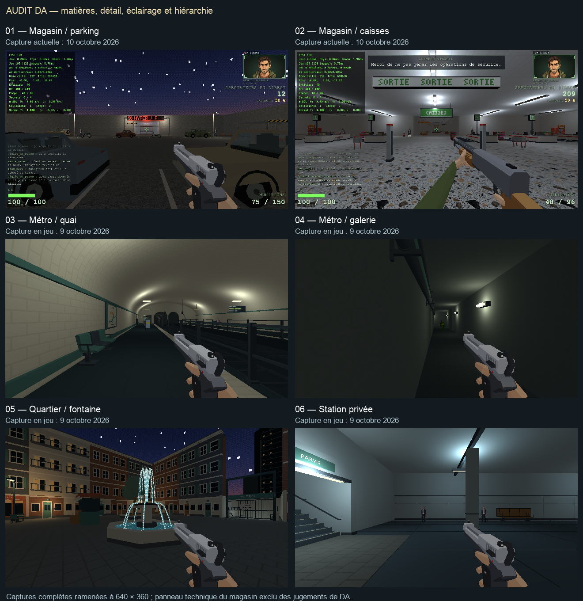
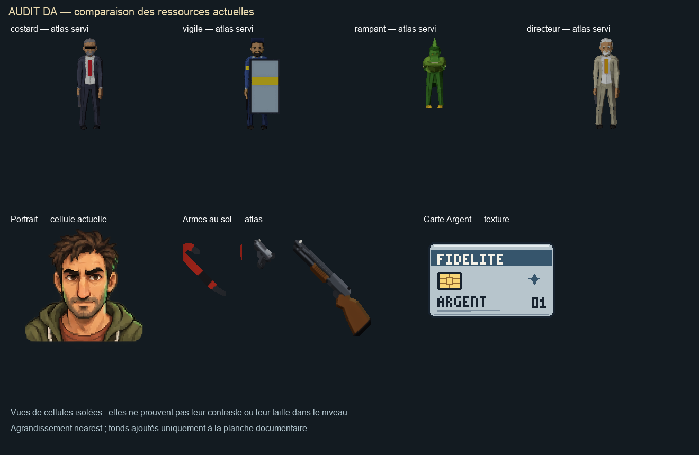
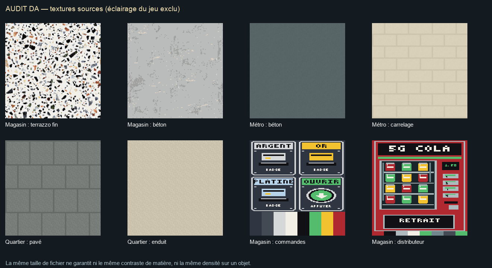
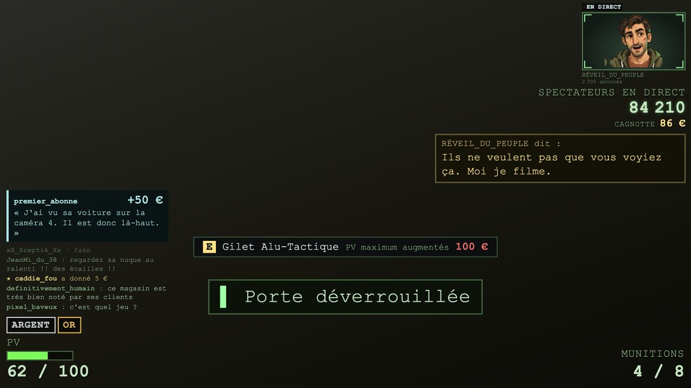
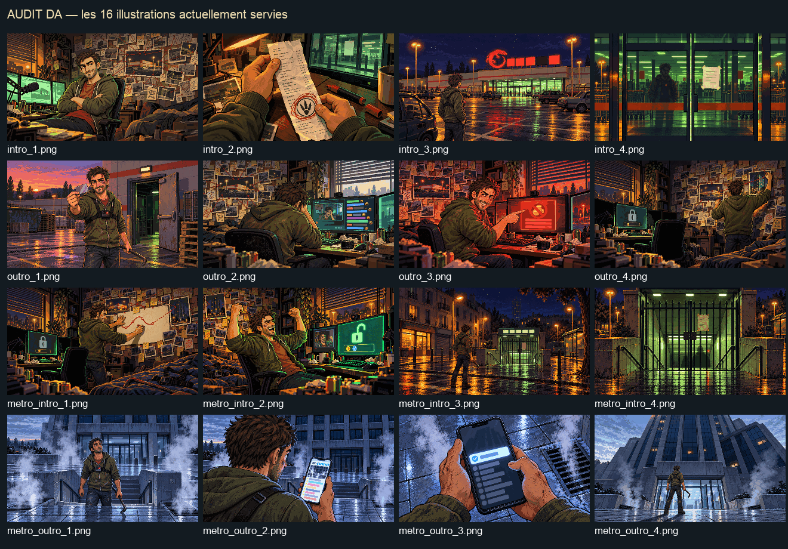

Audit de direction artistique
10 octobre 2026 · état observé avant harmonisation. Ces planches regroupent les images existantes et les nouvelles captures de l'audit. Les différences proposées sont décrites dans le rapport ; aucune image du jeu n'a été retouchée.
Lire le rapport et les priorités
Environnements
La rue et les caisses sont capturées le 10 octobre. Les quatre autres vues sont des captures du parcours jouable du 9 octobre.

Sprites et objets à ramasser
Cellules extraites des atlas actuels. Les cellules isolées ne reproduisent pas leur taille ni leur éclairage dans le monde.

Textures sources
Comparaison de matières, commandes et façade de distributeur. Les couleurs de texture sont présentées sans la lumière du jeu.

Interface en aperçu
Composants actuels sur un fond de démonstration, avec plusieurs notifications volontairement simultanées.

Illustrations de campagne
Les seize panneaux du magasin et du métro. Leur format source est 640 × 360.

Images en taille de capture